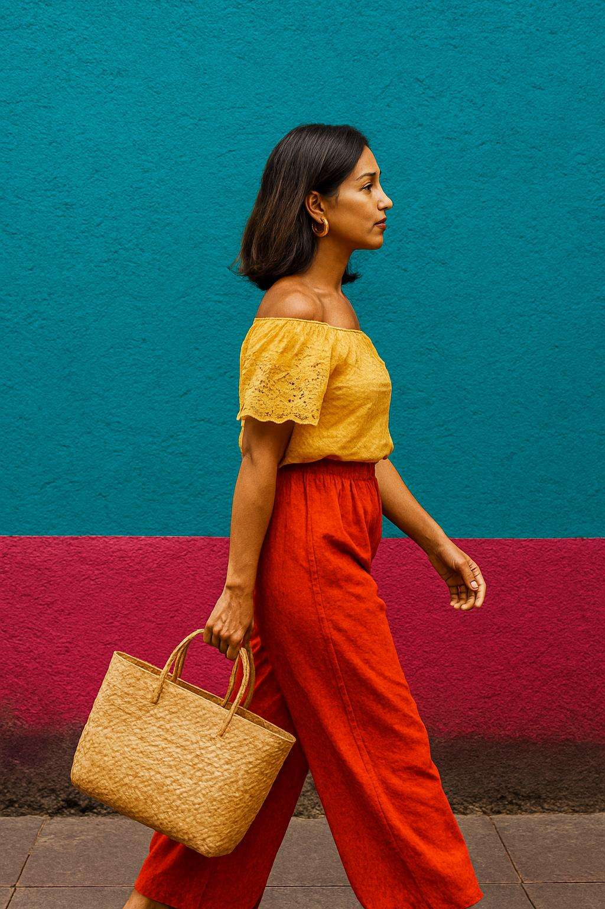

Is Mexico the New Capital of Color? A Street Style Investigation

Mexico City isn’t just a place — it’s a palette. And color here doesn’t whisper style. It yells soul.
“Color in CDMX isn’t decoration — it’s declaration.”
Mexico City has stepped out of the shadows and into the spotlight, painted in tones the rest of the world forgot to use. From the cobbled sidewalks of Coyoacán to the concrete curves of Juárez, color isn’t a trend — it’s a language. And every outfit on these streets is speaking it loud.
The vibrancy comes from something deeper: indigenous textile heritage, lucha libre flamboyance, muralismo legacy and street resistance wrapped in thread. It’s bold because it has always been bold — not for fashion week, but for life.

Ask any local, and they’ll tell you: dressing in CDMX isn’t about trends. It’s about energy. Texture. Legacy. A skirt might carry the color of your grandmother’s apron. A bag might’ve lived five lives at the market. And those oversized sunglasses? They’re from a cousin who sold vintage from a truck.
It’s a remix. A rhythm. A riot of reference. Nothing matches, and that’s what makes it magic.

“What CDMX wears today, others try tomorrow.”
In Roma Norte, fashion walks by you before you realize it. Loafers with no socks. Leather harnesses over linen shirts. Lime green dresses with metallic sneakers. Nobody asks, “Can I pull this off?” They just do.
And behind every one of those looks is someone designing from scratch: upcycled denim jackets, painted button-downs, patches that shout resistance in every stitch.
This isn’t fast fashion. This is fast culture. Alive, changing, adapting. CDMX has no rules — only references. A little punk. A little folklore. A lot of pride. And the world is watching.
From the rooftops of art collectives to tianguis thrift stalls, Mexico City is dressing for itself — and that’s exactly why everyone else wants in.